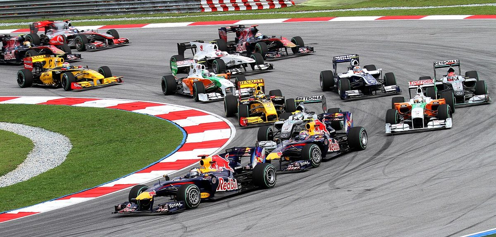

Формула-1 подтвердила проведение финала сезона на Ближнем Востоке: план с Имолой отменен
Руководство чемпионата подтвердило этапы в Катаре и Абу-Даби после отказа от услуг итальянского автодрома, подчеркнув, что безопасность остается безусловным приоритетом.

Что произошло
Руководство Формулы-1 официально уведомило автодром Имола в Италии, что его услуги в качестве запасной площадки на конец сезона 2026 года больше не требуются. Ф1 продолжает реализацию запланированного дуплета гонок на Ближнем Востоке: Гран-при Катара пройдет с 27 по 29 ноября, а Гран-при Абу-Даби закроет сезон 4–6 декабря.
Ранее итальянской трассе, расположенной в 20 милях от Болоньи, было поручено готовиться к возможному проведению этапа в даты Абу-Даби на случай, если поездки в этот регион станут невозможными из-за соображений безопасности.

Почему об этом говорят
Решение было принято после нескольких месяцев неопределенности, вызванной региональным конфликтом с участием США, Израиля и Ирана. Ранее в этом году боевые действия уже нарушили первоначальный календарь, вынудив отменить апрельскую гонку в Саудовской Аравии и перенести Гран-при Бахрейна, который в итоге прошел в октябре на малайзийском Сепанге (Sepang).
Хотя текущие рекомендации правительств разрешают поездки, а страховка остается действительной, ключевые фигуры в паддоке выражали беспокойство из-за близости к Ормузскому проливу (Strait of Hormuz), где продолжаются ракетные удары. Кроме того, Саудовская Аравия остается мишенью для атак хуситов из Йемена, что привело к отмене или переносу нескольких мероприятий в стране за последние недели.
Несмотря на эти тревоги, руководство Ф1 и команды отметили, что ситуация в Катаре и Объединенных Арабских Эмиратах в последние месяцы стабилизировалась. Бизнес-активность вернулась к нормальному уровню, а обе страны имеют серьезные финансовые и владельческие связи с чемпионатом, включая инвестиции Катара в команду Audi и долю Абу-Даби в McLaren.
Заметим, что в оригинальном тексте упоминается Audi, которая официально дебютирует в 2026 году.

Ключевые факты и цифры
Во вторник, с истечением установленного срока, Имоле было предписано свернуть подготовительные работы. Ключевые заинтересованные стороны, включая представителей команд, встречались для обсуждения плана на случай непредвиденных обстоятельств и получения гарантий безопасности на случай эскалации во время гоночных недель.
Президент FIA Мохаммед бен Сулайем (Mohammed Ben Sulayem) опубликовал в Instagram заявление, в котором подтвердил твердую приверженность проведению двух финальных Гран-при. Кроме того, в предыдущие выходные MotoGP с успехом провел этап в Катаре. Команды Ф1 неизменно выражают доверие руководству и управляющей компании в вопросах принятия решений по календарю.
Что будет дальше
Логистическая подготовка и отправка грузов в Катар и Абу-Даби пойдут по плану. Руководство Формулы-1 настаивает, что безопасность является абсолютным приоритетом, подчеркивая: чемпионат по-прежнему готов отменить или изменить расписание этапов, если ситуация с безопасностью ухудшится перед началом гоночных уик-эндов.